소방설비기사(전기분야) (2012-09-15 기출문제)
1과목: 소방원론
1. 제 2류 위험물에 해당하지 않는 것은?
- 유황
- 황화린
- 적린
- 황린
(정답률: 82%)

2. 주된 연소의 형태가 분해연소인 물질은?
- 코크스
- 알코올
- 목재
- 나프탈렌
(정답률: 66%)
3. 마그네슘의 화재시 이산화탄소소화약제를 사용하면 안되는 주된 이유는?
- 마그네슘과 이산화탄소가 반응하여 흡열반응을 일으키기 때문이다.
- 마그네슘과 이산화탄소가 반응하여 가연성의 탄소가 생성되기 때문이다.
- 마그네슙이 이산화탄소에 녹기 때문이다.
- 이산화탄소에 의한 질식의 우려가 있기 때문이다.
(정답률: 73%)
4. 다음 중 착화온도가 가장 낮은 것은?
- 에틸알코올
- 톨루엔
- 등유
- 가솔린
(정답률: 63%)
5. 다음 할로겐원소 중 원자번호가 가장 작은 것은?
- F
- Cl
- Br
- I
(정답률: 76%)
6. 22℃ 물 1톤을 소화약제로 사용하여 모두 증발시켰을때 얻을 수 있는 냉각효과는 몇 kcal 인가?
- 539
- 617
- 539000
- 617000
(정답률: 58%)
7. 공기와 할론 1301의 혼합기체에서 할론 1301에 비해 공기의 확산속도는 약 몇 배 인가? (단, 공기의 평균분자량은 29, 할론 1301의 분자량은 149이다.)
- 2.27배
- 3.85배
- 5.17배
- 6.46배
(정답률: 56%)
8. 조연성 가스에 해당하는 것은?
- 수소
- 일산화탄소
- 산소
- 에탄
(정답률: 84%)
9. 목재 화재시 다량의 물을 뿌려 소화하고자 한다. 이 때 가장 큰 소화효과는?
- 제거소화효과
- 냉각소화효과
- 부촉매소화효과
- 희석소화효과
(정답률: 88%)
10. 다음 중 비열이 가장 큰 것은?
- 물
- 금
- 수은
- 철
(정답률: 85%)
11. 연소시 백적색의 온도는 약 몇 ℃ 정도 되는가?
- 400
- 650
- 750
- 1300
(정답률: 68%)
12. 피난동선에 대한 계획으로 옳지 않은 것은?
- 피난동선은 가급적 일상 동선과 다르게 계획한다.
- 피난동선은 적어도 2개소의 안전장소를 확보한다.
- 피난동선의 말단은 안전장소이어야 한다.
- 피난동선은 간단명료해야 한다,
(정답률: 88%)
13. 메탄이 완전 연소할 때의 연소 생성물을 옳게 나열한 것은?
- H2O, HCl
- SO2, CO2
- SO2, HCl
- CO2, H2O
(정답률: 69%)
14. 할로겐 화합문 소화설비에서 Halon 1211 약제의 분자식은?
- CF2BrCl
- CBR2ClF
- CCl2BrF
- BrC2ClF
(정답률: 84%)
15. 분말소화약제의 주성분이 아닌 것은?
- 황산알루미늄
- 탄산수소나트륨
- 탄산수소칼륨
- 제1인산암모늄
(정답률: 82%)
16. 휘발유 화재시 물을 사용하여 소화할 수 없는 이유로 가장 옳은 것은?
- 인화점이 물보다 낮기 때문이다.
- 비중이 물보다 작아 연소면을 확대되기 때문이다.
- 수용성이므로 물에 녹아 폭발이 일어나기 때문이다.
- 물과 반응하여 수소가스를 발생하기 때문이다.
(정답률: 87%)
17. 다음 중 분진폭발의 위험성이 가장 낮은 것은?
- 알루미늄분
- 유황
- 팽창질석
- 소맥분
(정답률: 83%)
18. 공기를 기준으로 한 CO2 가스 비중은 약 얼마인가? (단, 공기의 분자량은 29이다.)
- 0.81
- 1.52
- 2.02
- 2.51
(정답률: 82%)
19. 연기감지기가 작동할 정도이고 가시거리가 20~30m 에 해당하는 감광계수는 얼마인가?
- 0.1m-1
- 1.0m-1
- 2.0m-1
- 10m-1
(정답률: 80%)
20. 「건축물의 피난ㆍ방화구조 등의 기준에 관한 규칙」 에 따른 바닥의 내화구조 기준으로 "철근콘크리트조 또는 철골철근콘크리트조로서 두께가 ( ) cm 이상인 것"의 ( ）에 알맞은 수치는?
- 4
- 5
- 7
- 10
(정답률: 81%)
2과목: 소방전기회로
21. 변압기의 내부고장 보호에 사용되는 계전기는 다음 중 어느 것인가?
- 차동 계전기
- 저전압 계전기
- 고전압 계전기
- 압력 계전기
(정답률: 84%)
22. 이상적인 전압원 및 전류원에 대한 설명이 옳은 것은?
- 전압원의 내부저항은 ∞이고, 전류원은 0 이다.
- 전압원의 내부저항은 0 이고, 전류원은 ∞이다.
- 전압원이나 전류원의 내부저항은 흐르는 전류에 따라 변한다.
- 전압원의 내부 저항은 일정하고, 전류원의 내부저항은 일정하지 않다.
(정답률: 62%)
23. 주파수응답 특성을 설명한 것이다. 옳지 않은 것은?
- 저역통과 회로: 차단주파수 보다 높은 주파수는 잘 통과시키지 않고 낮은 주파수를 잘 통과시키는 회로
- 고역통과 회로: 차단주파수 보다 높은 주파수는 잘 통과시키지만 낮은 주파수를 잘 통과시키지 않는 회로
- 대역통과 회로: 중간 범위의 주파수는 잘 통과 시키지만 이보다 낮거나 높은 주파수는 잘 통과시키지 않는 회로
- 대역저지 회로: 어떤 범위의 주파수는 통과시키고 이보다 낮거나 높은 주파수는 잘 통과시키지 않는 회로
(정답률: 57%)
24. 다음 변환요소의 종류 중 변위를 임피던스로 변환하여 주는 것은?
- 벨로스
- 노즐 플래퍼
- 가변 저항기
- 전자 코일
(정답률: 57%)
25. 다음과 같이 구성한 연산증폭기 회로에서 출력전압v0는?
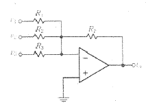
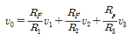
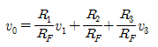
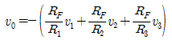
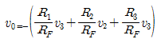
(정답률: 59%)
26. 피드백제어계 중 물체의 위치, 방위, 자세 등의 기계적 변위를 제어량으로 하는 것은.?
- 서보기구
- 프로세스제어
- 자동조정
- 프로그램제어
(정답률: 74%)
27. 길이 ℓ 의 도체로 원형코일을 만들어 일정한 전류를 흘릴때 M회 감았을 때의 중심의 자계는 N회 감았을 때의 중심의 자계의 몇 배인가?
- M/N
- M2/N2
- N/M
- N2/M2
(정답률: 55%)
28. 저항을 설명한 다음 문항 중 틀린 것은?
- 기호는 R, 단위는 [Ω]이다.
- 오음의 법칙은
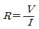
- R 의 역수는 서셉턴스이며 단위는 [℧]이다.
- 전류의 흐름을 방해하는 작용을 저항이라 한다.
(정답률: 80%)
29. 대전된 전기의 양을 전하량(전하)이라고 하며, 정(+)전하와 부(-)전하로 나뉜다. 정전하와 부전하의 두 전하 사이에 작용하는 힘을 무엇이라고 하는가?
- 정전기
- 정전용량
- 전기장
- 정전력
(정답률: 72%)
30. 교류전압계이 지침이 지시하는 전압은 다음 중 어느 것인가?
- 실효값
- 평균값
- 최대값
- 순시값
(정답률: 79%)
31. 저항 R1, R2와 인덕턴스 L이 직렬로 연결된 회로에서 시정수[sec]는?
- R1+R2/L
- -R1+R2/L
- L/R1+R2
- -L/R1+R2
(정답률: 71%)
32. 다음 중 완전 통전상태에 있는 SCR을 차단상태로 하기 위한 방법으로 알맞은 것은?
- 게이트 전류를 차단시킨디.
- 게이트에 역방향 바이어스를 인가한다.
- 양극전압을 (-)로 한다.
- 양극전압을 더 높게 한다.
(정답률: 57%)
33. 동일한 전류가 흐르는 두개의 평행도체가 있다. 도체간의 거리를 1/2로 하면 그 작용하는 힘은 몇 배로 되는가?
- 2
- 4
- 8
- 16
(정답률: 49%)
34. 단상 200[V]의 교류전압을 회로에 인가할 때 π/6[rad]만큼 위상이 뒤진 10[A]의 전류가 흐른다고 한다. 이 회로의 역률은 몇 [%]인가?
- 86.6
- 89.6
- 92.6
- 95.6
(정답률: 53%)
35. 그림과 같은 회로의 AB 사이의 합성저항은?
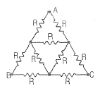
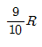
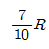
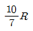
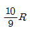
(정답률: 56%)
36. 유도성부하를 사용하는 경우 역률을 개선하기 위한 방법으로 콘덴서를 부하에 병렬로 접속시켜 역률을 개선한다. 다음 중 역률개선의 의미와 다른 것은?
- 위상차(θ)를 작게 한다.
- XL-XC=0에 가깝도록 조정한다.
- cosθ의 값을 크게 해준다.
- 전압과 전류의 위상차를 크게 한다.
(정답률: 66%)
37. 어떤 회로에 V=100+j20[V]인 전압을 가했을 때 I=8+j6[A]인 저류가 흘렀다. 이 회로의 소비전력은 몇 [W]인가?
- 800[W]
- 920[W]
- 1200[W]
- 1400[W]
(정답률: 50%)
38. 그림과 같은 회로의 역률은 얼마인가?
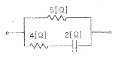
- 0.24
- 0.59
- 0.8
- 0.97
(정답률: 36%)
39. 다음과 같은 특성을 갖는 제어계는?
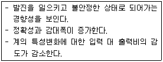
- 프로세스제어
- 피드백제어
- 프로그램제어
- 추종제어
(정답률: 75%)
40. 3상 평형부하가 있다. 선간전압 3000[V], 선전류 30[A], 역률 0.9(뒤짐)이다. 부하가 Y결선일 때 한 상의 저항은 몇 [Ω]인가?
- 90[Ω]
- 51.96[Ω]
- 173.20[Ω]
- 4676.53[Ω]
(정답률: 54%)
3과목: 소방관계법규
41. 성능위주설계를 할 수 있는 자가 보유하여야 하는 기술인력의 기준은?
- 소방기술사 2인 이상
- 소방기술사 1인 및 소방설비기사 2인 (기계 및 전기분야 각 1인)이상
- 소방분야 공학박사 2인 이상
- 소방기술사 1인 및 소방분야 공학박사 1인 이상
(정답률: 53%)
42. 화재경계지구 안의 소방대상물에 대한 소방검사를 거부ㆍ방해 또는 기피한자에 대한 벌칙은?
- 100만원 이하의 벌금
- 200만원 이하의 벌금
- 300만원 이하의 벌금
- 500만원 이하의 벌금
(정답률: 36%)
43. 함부로 버려두거나 그냥 둔 위험물의 소유자ㆍ관리자ㆍ점유자의 주소ㆍ성명을 알 수 없어 필요한 명령을 할 수 없는때에 소방본부장 또는 소방서장이 취하여야 하는 조치로 맞는 것은?
- 시ㆍ도지사에게 보고하여야 한다.
- 경찰서장에게 통보하여 위험물을 처리하도록 하여야 한다.
- 소속공무원으로 하여금 그 위험물을 옮기거나 치우게 할 수 있다.
- 소유자가 나타날때까지 기다린다.
(정답률: 74%)
44. 다음 중 소방시설관리업의 등록이 불가능한 자는?
- 관리업 등록이 취소된 날부터 1년이 지난 사람
- 소방기본법의 위반으로 실형을 선고받고 그 집행이 끝난 후 3년이 지난 사람
- 소방시설공사업법 위반으로 금고형이 실형을 선고받고 그 집행이 면제된 날부터 2년이 지난 사람
- 위험물안전관리법 위반으로 집행유예를 선고받고 집행 유예기간이 끝난 날부터 6개월이 지난 사람
(정답률: 62%)
45. 다음 ( ）안의 알맞은 내용을 바르게 나타낸 것은?
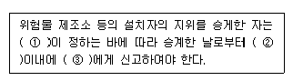
- ① 대통령령 ② 14일 ③시ㆍ도지사
- ①대통령령 ② 30일 ③소방본부장ㆍ소방서장
- ①행정안전부령 ②14일 ③소방본부장ㆍ소방서장
- ①행정안전부령 ②30일 ③시ㆍ도지사
(정답률: 42%)
46. 특정소방대상물에 설치하는 물품 중 방염처리 대상이 아닌 것은?
- 창문에 설치하는 브라인드
- 두께가 2[mm] 미만인 종이벽지
- 무대용 섬유판
- 영화상영관에 설치된 스크린
(정답률: 83%)
47. 피난시설 및 방화시설의 유지ㆍ관리에 대한 관계인의 잘못된 행위가 아닌 것은?
- 피난시설ㆍ방화시설을 수리하는 행위
- 방화시설을 폐쇄하는 행위
- 피난시설 및 방화시설을 변경하는 행위
- 방화시설 주위에 물건을 쌓아두는 행위
(정답률: 79%)
48. 건축허가 등을 함에 있어서 소방본부장 또는 소방서장의 동의를 받아야 하는 건축물 등의 범위가 아닌 것은?
- 차고ㆍ주차장으로 사용되는 층 중 바닥면적이 150[m2] 이상인 층이 있는 시설
- 항공기격납고, 관망탑, 항공관제탑, 방송용 송ㆍ수신탑
- 지하층 또는 무창층이 있는 건축물로서 바닥면적이 150[m2]이상인 층인 있는 것
- 승강기 등 기계장치에 의한 주차시설로서 자동차 20대 이상을 주차할 수 있는 시설
(정답률: 60%)
49. 위험물안전관리법에서 정하는 위험물질에 대한 설명으로 다음 중 옳은 것은?
- 철분이라 함은 철의 분말로서 53[μm]의 표준체를 통과하는 것이 60중량퍼센트 미만인 것은 제외한다.
- 인화성고체라 함은 고형알코올 그 밖에 1기압에서 인화점이 21℃미만인 고체를 말한다.
- 유황은 순도가 60중량퍼센트 이상인 것을 말한다.
- 과산화수소는 그 농도가 36중량퍼센트 이하인 것에 한한다.
(정답률: 47%)
50. 시ㆍ도의 화재 예방ㆍ경계ㆍ진압 및 조사와 화재, 재난ㆍ재해ㆍ, 그 밖의 위급한 상황에서의 구조ㆍ구급 등의 소방업무를 수행하는 소방기관이 설치에 필요한 사항은 어떻게 정하는가?(오류 신고가 접수된 문제입니다. 반드시 정답과 해설을 확인하시기 바랍니다.)
- 시ㆍ도지사가 정한다.
- 행정안전부령이 정한다.
- 소방방재청장이 정한다.
- 대통령령으로 정한다.
(정답률: 49%)
51. 화재가 발생하는 경우 화재의 확대가 빠른 고무류ㆍ연화류ㆍ석탄 및 목탄 등 특수가연물이 저장 및 취급 기분을 설명한 것 중 옳지 않은 것은?
- 취급 장소에는 품명ㆍ최대수량 및 화기취급의 금지표지를 설치할것
- 품명별로 구분하여 쌓아 저장할 것
- 쌓는 높이는 10[m] 이하가 되도록 하고 쌓는 부분의 바닥면적은 100[m2](석탄, 목탄류의 경우에는 200[m2])이하가 되도록 할 것
- 쌓는 부분의 바닥면적 사이는 1[m] 이상이 되도록 할 것
(정답률: 71%)
52. 지정수량의 몇 배 이상의 위험물을 저장하는 옥내저장소에는 화재예방을 위한 예방규정을 정하여야 하는가?
- 10배
- 100배
- 150배
- 200배
(정답률: 57%)
53. 위험물을 취급함에 있어서 정전기가 발생할 우려가 있는 설비에는 정전기를 유효하게 제거할 수 있는 설비를 설치하여야 한다. 다음 중 정전기를 제거하는 방법에 속하지 않는 것은?
- 공기 중의 상대습도를 70% 이상으로 하는 방법
- 절연도가 높은 플라스틱을 사용하는 방법
- 접지에 의한 방법
- 공기를 이온화하는 방법
(정답률: 70%)
54. 소화활동설비에서 제연설비를 설치하여야 하는 특정소방대상물의 기준으로 틀린 것은?
- 문화집회 및 운동시설로서 무대부의 바닥면적이 200[m2] 이상인 것
- 근린생활시설ㆍ위락시설ㆍ판매시설ㆍ숙박시설 등으로서 지하층인 것
- 지하가(터널을 제외한다)로서 연면적 1000[m2] 이상인 것
- 지하가 중 터널로서 길이가 300[m] 이상인 것
(정답률: 72%)
55. 소방안전관리자에 대한 강습교육을 실시하고자 할 때 한국소방안전협회의 장은 강습교육 며칠 전까지 교육실시에 관하여 필요한 사항을 공고하여야 하는가?
- 14일
- 20일
- 30일
- 45일
(정답률: 42%)
56. 소방시설관리업자가 기술인력을 변경해야 하는 경우 제출하지 않아도 되는 서류는?
- 소방시설관리업 등록수첩
- 변경된 기술인력의 기술자격증(자격수첩)
- 기술인력 연명부
- 사업자등록증 사본
(정답률: 70%)
57. 소방시설공사업의 등록사항 변경신고는 변경이 있는 날로부터 며칠 이내에 하여야 하는?
- 7일
- 15일
- 30일
- 3개월
(정답률: 48%)
58. 특정소방대상물의 소방계획의 작성 및 실시에 관한 지도ㆍ감독권자로 옳은 것은?
- 소방방재청장
- 소방본부장 또는 소방서장
- 시ㆍ도지사
- 행정안전부장관
(정답률: 68%)
59. 1급 소방안전관리대상물의 관계인이 소방안전관리자를 선임하고자 한다. 다음 중 1급 소방안전관리대상물의 소방안전관리자로 선임될 수 없는 사람은?
- 소방설비기사 또는 소방설비산업기사의 자격이 있는 사람
- 산업안전기사 또는 산업안전산업기사를 자격을 가지고 2년 이상 2급 소방안저관리대상물의 소방안전관리자로 근무한 실무경력이 있는 사람
- 소방공무원으로 7년 이상 근무한 경력이 있는 사람
- 대학교에서 소방안전관리학과를 전공하고 졸업한 사람으로서 2년 이상 2급 소방안전관리대상물의 소방안전 관리에 관한 근무한 경력이 있는 사람
(정답률: 54%)
60. 소방시설을 구분하는 경우 소화설비에 해당되지 않는 것은?
- 옥내소화전설비
- 제연설비
- 소화약제에 의한 간이 소화용구
- 소화기
(정답률: 62%)
4과목: 소방전기시설의 구조 및 원리
61. 다음 중 부착 높이가 4[m] 이상 8[m] 미만에 설치할 수 있는 감지기가 아닌 것은?(문제 오류로 가답안 발표시 2번으로 발표되었지만 확정답안 발표시 전항 정답 처리 되었습니다. 여기서는 가답안인 2번을 누르면 정답 처리 됩니다.)
- 불꽃감지기
- 열복합형
- 연기복합형
- 열연기복합형
(정답률: 69%)
62. 예비전원을 내장하지 아니하는 비상조명등의 비상전원은 자가발전설비 및 축전지설비를 설치하여야 한다. 설치기준으로 옳지 않은 것은?
- 비상전원을 실내에 설치하는 때에는 그 실내에는 비상조명등을 설치하지 않아도 된다.
- 점검이 편리하고 화재 및 침수 등의 재해로 인한 피해를 받을 우려가 없는 곳에 설치한다.
- 비상전원의 설치장소는 다른 장소와의 방화구획을 하여야 한다.
- 상용전원으로부터 전력의 공급이 중단된 때에는 자동으로 비상전원으로부터 전력을 공급받는 장치를 설치하여야 한다.
(정답률: 76%)
63. 누전경보기의 수신부 설치장소로 적당한 곳은?
- 화약류를 제조하는 장소
- 습도가 높은 장소
- 온도의 변화가 급격한 장소
- 고주파 등의 발생 우려가 없는 장소
(정답률: 82%)
64. 자동화재탐지설비의 감지기회로에 설치하는 종단저항의 설치기준으로 옳지 않은 것은?
- 점검 및 관리가 쉬운 장소에 설치하여야 한다.
- 감지기회로 끝부분에 설치한다.
- 전용함에 설치하는 경우 그 설치높이는 바닥으로부터 0.8[m] 이내에 설치하여야 한다.
- 종단감지기에 설치하는 경우 구별리 수비도록 해당 감지기의 기판 등에 별도의 표시를 하여야 한다.
(정답률: 79%)
65. 다음 중 복합형감지기의 종류에 속하지 않는 것은?(오류 신고가 접수된 문제입니다. 반드시 정답과 해설을 확인하시기 바랍니다.)
- 연기복합형
- 열복합형
- 열ㆍ연기복합형
- 열ㆍ연기ㆍ불꽃복합형
(정답률: 64%)
66. 다음 ( )에 알맞은 내용은?
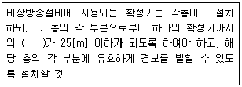
- 수평거리
- 수직거리
- 직통거리
- 보행거리
(정답률: 74%)
67. 무선통신보조설비에서 무선기기의 접속단자를 지상에 설치할 경우 보행거리 몇 [m] 이내마다 설치하는가?
- 100[m]
- 140[m]
- 300[m]
- 700[m]
(정답률: 80%)
68. 무선 통신보조설비의 주요구성요소가 아닌 것은?
- 전송장치(공중선 등)
- 증폭기
- 음향장치
- 분배기
(정답률: 65%)
69. 5층(지하층은 제외한다) 이상의 소방 대상물 중 지하층에서 발화 한 경우 비상방송성비 우선경보 해당 층의 기준으로 옳은 것은?
- 발화층, 그 직상층
- 발화층, 그 직하층
- 발화층 및 기타의 지하층
- 발화층, 그 직상층 및 기타의 지하층
(정답률: 75%)
70. 비상콘센트설비의 비상전원을 자가발전기설비 또는 비상전원수전설비로 설치하여야하는 소방대상물로 옳은 것은?
- 지하층을 제외한 층수가 4층 이상으로 연면적 600[m2]이상인 소방대상물
- 지하층을 제외한 층수가 5층 이상으로 연면적 1000[m2]이상인 소방대상물
- 지하층을 제외한 층수가 6층 이상으로 연면적 1500[m2]이상인 소방대상물
- 지하층을 제외한 층수가 7층 이상으로 연면적 2000[m2]이상인 소방대상물
(정답률: 53%)
71. 단독경보형감지기를 설치하는 경우 바닥면적이 얼마 마다 1개 이상 설치하여야 하는가?
- 50[m2]
- 100[m2]
- 150[m2]
- 200[m2]
(정답률: 75%)
72. 다음 중 유도등의 예비전원은 어떠한 축전지로 설치하여야 하는가?
- 알칼리계 2차축전지
- 리튬계 1차축전지
- 리튬-이온계 2차축전지
- 수은계 1차축전지
(정답률: 67%)
73. 자동화재탐지설비의 청각장애인용 시각경보장치의 설치기준으로 옳지 않은 것은?
- 복도ㆍ통로ㆍ청각장애인용 객실 및 공용으로 사용하는 거실에 설치
- 공연장 등에 설치하는 경우 인식이 용이하도록 객석 부분 등에 설치
- 설치높이는 바닥으로부터 2[m] 이상 2.5[m] 이하의 장소에 설치
- 시각경보장치의 광원은 전용의 축전지설비에 의하여 점등되도록 할 것
(정답률: 59%)
74. 비상콘센트용의 풀박스 등은 방청도장을 항 것으로서 두께는 몇 [mm] 이상의 철판으로 하는가?
- 1.0
- 1.2
- 1.5
- 1.6
(정답률: 78%)
75. 복도, 거실통로유도등의 설치높이에 대한 기준을 옳게 나타낸 것은? (단, 거실통로에 기둥 등이 설치되지 아니한 경우이다.)
- 거실통로유도등 : 바닥으로부터 1.5[m] 이상 복도통로유도등 : 바닥으로부터 1.0[m] 이하
- 거실통로유도등 : 바닥으로부터 1.0[m] 이상 복도통로유도등 : 바닥으로부터 1.5[m] 이하
- 거실통로유도등 : 바닥으로부터 1.5[m] 이하 복도통로유도등 : 바닥으로부터 1.0[m] 이상
- 거실통로유도등 : 바닥으로부터 1.0[m] 이하 복도통로유도등 : 바닥으로부터 1.5[m] 이하
(정답률: 54%)
76. 비상방송설비의 설치기준에 대한 설명으로 옳은 것은?
- 다른 전기회로에 따라 유도장애가 발생할 수 있을 것
- 다른 방송설비와 공용할 경우 화재 시 비상경보외의 방송을 차단할 수 있을 것
- 화재신고를 수신한 후 20초 이내에 방송이 자동으로 개시될 것
- 음량조정기를 설치하는 경우 음량조정기의 배선은 2선식으로 할 것
(정답률: 73%)
77. 비상콘센트설비에서 저압의 범위는?(2021년 개정된 KEC 규정 적용됨)
- 직류 600[V] 이하 , 교류600[V] 이하
- 직류 750[V] 이하 , 교류600[V] 이하
- 직류 750[V] 이하 , 교류1000[V] 이하
- 직류 1500[V] 이하 , 교류1000[V] 이하
(정답률: 79%)
78. 소방시설용 비상전원수전설비에서 전력수급용 계기용 변서기ㆍ주차단장치 및 그 부속시시로 정의되는 것은?
- 큐비클설비
- 배전반설비
- 수전설비
- 변전설비
(정답률: 72%)
79. 자동화재탐지설비의 경계구역에 대한 설명 중 맞는 것은?
- 하나의 경계구역이 2개 이상의 건축물에 미치지 아니하도록 하여야 한다.
- 600[m2] 이하의 범위 안에서는 2개의 층을 하나의 경계구역으로 할 수 있다.
- 하나의 경계구역의 면적은 600[m2], 한 변의 길이는 30[m] 이하로 한다.
- 지하구에 있어서는 경계구역의 길이는 500[m] 이하로 한다.
(정답률: 72%)
80. P형 1급 발신기에 사용하는 회선의 종류는?
- 회로선, 공통선, 소화선, 전화선
- 회로선, 공통선, 발신기선, 전화선
- 회로선, 공통선, 발신기선, 응답선
- 신호선, 공통선, 발신기선, 응답선
(정답률: 67%)